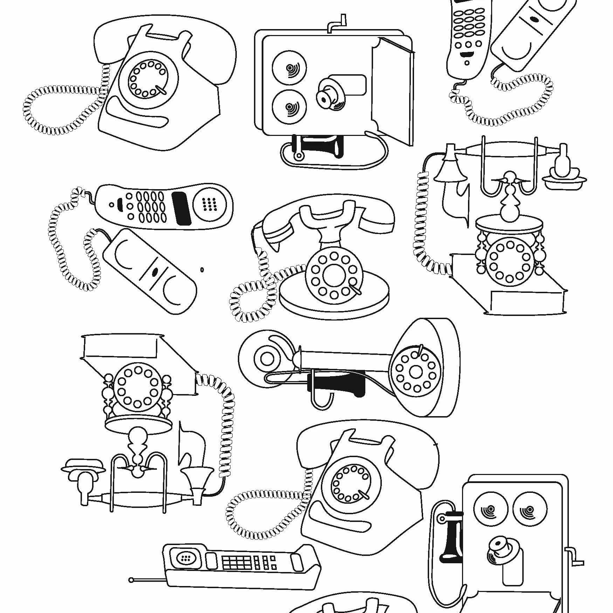
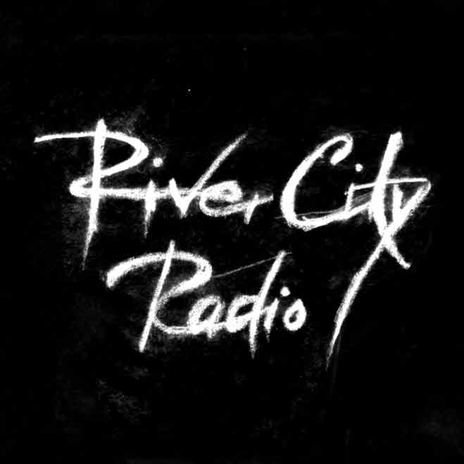

Work.
I have a strength with cartoons and making things that aren't quite realistic.

Taking something we use everyday, and making people think more about it, how we got to the iphone, and what kind of phones came before.

One of my favourite pieces, This ended up almost like a painting, with each layer, it would just keep looking better and better.

They really dug the rough grit that this logo signified.

This teabox is dying to stand out from the rest. Using a unique polyhedron shape, these teaboxes can be placed tumble style in the display while all the rest of the boxes fall flat.

Took the concept of the clients shop, a local garage thaat has been in the family for 50+ years. And took the Chevy truck as the main focus, making it stand out with it's candy apple red.